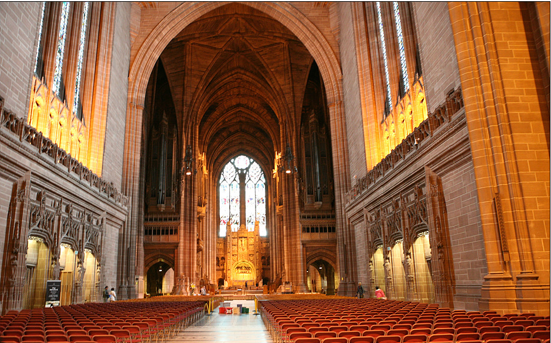

리버풀 대성당
리버풀 대성당은 영국 리버풀에 있는 영국 성공회 대성당이다.
리버풀 교구의 중심지이기도 하며, 주교좌가 위치해 있다. 정식 이름은 부활하신 그리스도의 교회 리버풀 대성당이며, '그리스도의 가장 영광스러운 부활에 대한 특별한 헌사'를 기념하여 건설되었다.
리버풀 대성당은 브리튼 섬에서 가장 거대한 규모의 종교 건물이자, 가장 거대한 대성당이다.
리버풀 대성당은 자일스 길버트 스콧의 설계도에 기반하여 지어졌으며, 1904년에 공사를 시작해 1978년에 완성되었다.
대성당의 총 길이는 약 189m고, 내부 길이는 약 150m로, 세계에서 가장 긴 대성당이다.
부피로 따지자면 리버풀 대성당은 세계에서 5번째로 거대한 대성당이며, 중앙의 벽돌 탑의 높이만 해도 약 101m이기에, 첨탑이 없는 대성당들 중에서는 세계에서 가장 높은 대성당이기도 하다.
리버풀에는 대성당이 2개가 있는데, 하나는 영국 국교회 소유의 대성당이고 나머지 하나는 로마 가톨릭 소유의 대성당이다.
로마 가톨릭 대성당은 북쪽으로 약 반 마일정도 떨어져 있다.